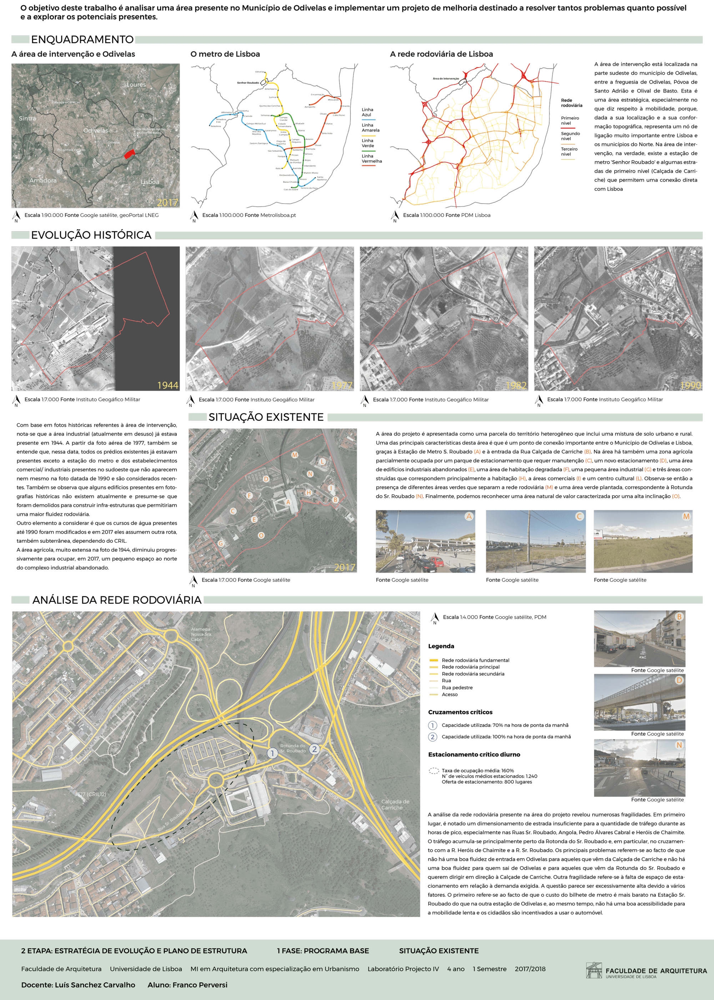
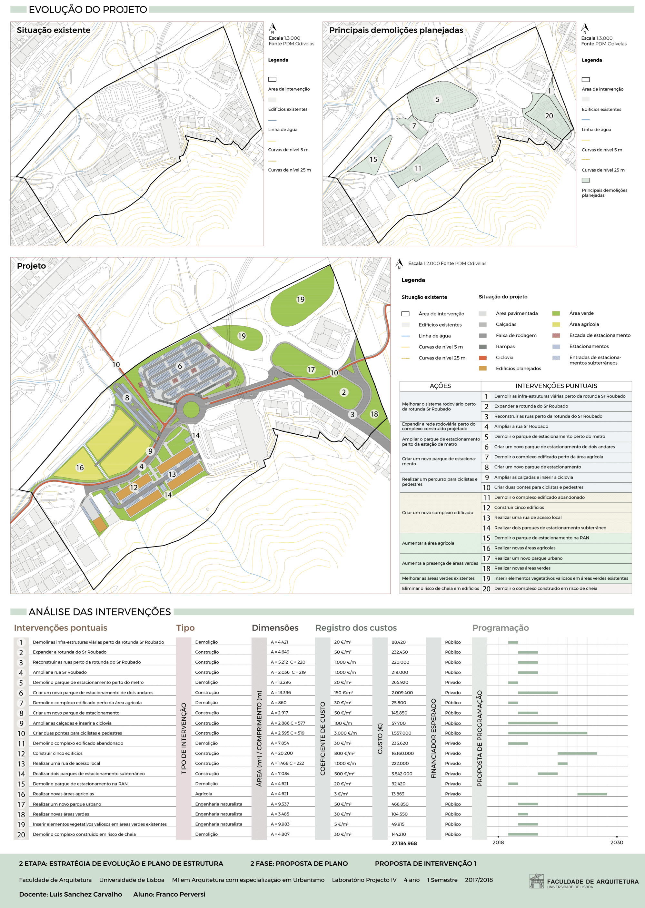
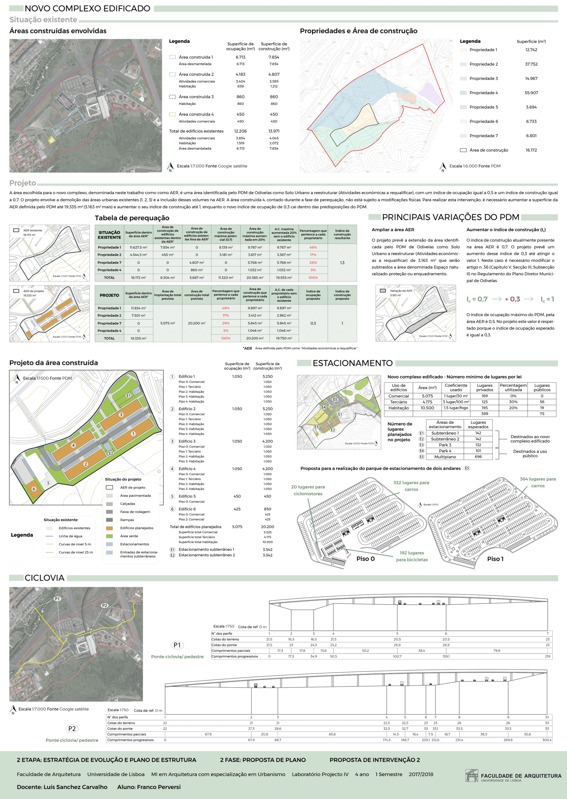

Urban project for a critical area in Odivelas (Lisbon metropolitan area)
For this laboratory, entirely made in portuguese, was made at first an extesive analysis of the critical area, inlcuding the study of the buildings historical evolution, the road system and the regulatory provisions of existing urban plans. Subsequently an intervenction strategy was developed, useful to uderstand what are guidelines that the project has to follow and where are the intervenction areas. The final step was to describe the project and all its details explaining what, where and when it should be done
Analysis
Strategy
Project
 